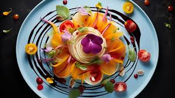
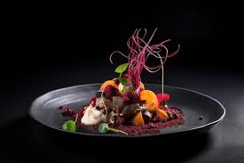

The Art of Food Plating

Food plating is an essential aspect of culinary arts that can transform a simple meal into a visual masterpiece. It's not just about making food look pretty; it's about enhancing the dining experience through presentation, turning each dish into a feast for the eyes as well as the palate.
Why Food Plating Matters
The way food is presented can significantly impact our perception of taste and overall enjoyment. A well-plated dish can stimulate appetite, create anticipation, and even influence how flavors are perceived. It's the first impression of a meal, setting the stage for the culinary journey that follows.
Key Principles of Food Plating
- Balance: Arrange elements to create visual harmony and proportion
- Color: Use contrasting colors to make dishes pop and appear more appetizing
- Texture: Showcase different textures for visual interest and depth
- Negative Space: Utilize empty space to highlight key elements and prevent overcrowding
Examples of Creative Food Plating

